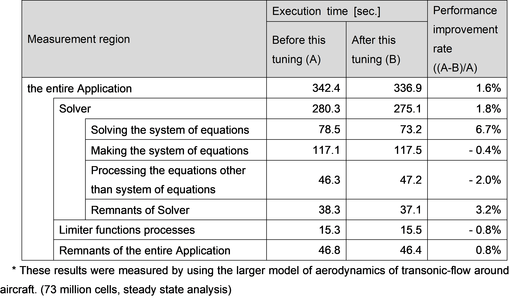

4.10. Improving the memory placement of two-dimensional arrays for sequential access¶
4.10.1. Target for this tuning¶
The target for tuning in this section is the function which allocates or deallocates memory for two-dimensional arrays. While the cost of each function was low, these were called by many other functions. Therefore, tuning these functions was expected to improve the performance of the entire Application. This section describes the tuning for the memory allocation function as an example.
4.10.2. Analysis¶
The following is the source code of target function. The key points of this source code are as follows:
The memory was allocated for the number of elements in the second dimension of the array at (1).
Memory was allocated at random addresses on the memory map (see the following image).
[Some lines from function, which allocate the two-dimensional arrays, before this tuning was performed]
{kind=link}
4.10.3. Tuning¶
The following tuning was performed. In addition to this function, this tuning also applied to other memory-related functions, such as memory deallocate functions.
When the two-dimensional array was allocated, each element of the array was assigned to sequential addresses on the memory map.
[Some lines from function, which allocate the two-dimensional arrays, after this tuning was performed]
{kind=link}
Each element of the two-dimensional array was assigned to sequential addresses on the memory map by this tuning, therefore the two-dimensional arrays could be accessed sequentially then.
In addition, this tuning made it possible to perform the tuning item #42. This tuning target of the tuning item #42 was some loops which manipulate 2-dimensional single-precision arrays in the function “calc_function_1” in the measurement region “Solving the system of equations”. The aim of the tuning item #42 was increasing the number of elements operated by a single SIMD instruction up to 16, while it was 8 before applying this tuning..
4.10.4. Evaluation of the performance¶
To evaluate the effect of this tuning (corresponding to the tuning item #41) and the tuning item #42, the execution time of the Application before performing this tuning was compared with that after performing this tuning. This tuning may have affected the various parts of the Application, so the execution time of each measurement region was also measured. Note that the larger model, with 73 million elements than the one used so far, was employed for this evaluation to see the remarkable effect.
The following table represents the result of the execution time of the entire Application and that of each measurement region. As seen in the results, the entire Application performance improvement was 1.6%. In particular, measurement region “Solving the system of equations” had been improved by 6.7%. This indicates the effect of this tuning and the tuning item #42.
{kind=link}